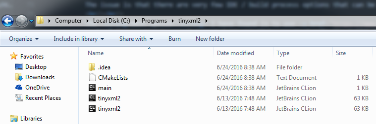
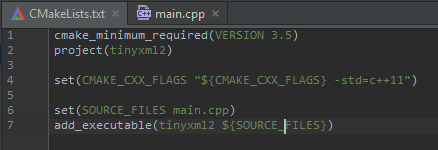
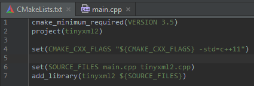
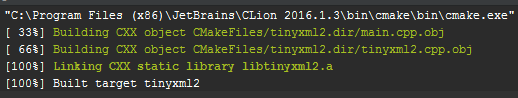
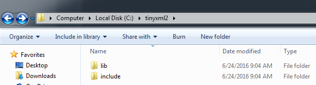
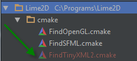

CLion, CMake, and Statically Linked Libraries
If you're in the process of working on a project in C++, then you have probably recently made a bunch of decisions regarding
which operating system to use, which IDE to use, and which compiler to use.
The issue is that there are very few IDE / build process options that can be used [almost] universally among all major operating systems.
The best option I have found is to use JetBrains CLion in conjunction with
CMake to handle the build process. You will still need your own compiler, which may lead
to some inconsistencies down the road, but CLion and CMake are the closest you will be able to get to a cross platform C++ solution.
Why CLion and CMake?
I spent a tremendous amount of time bouncing between different C++ IDEs because I could not find anything that satisfied my needs. Being able to develop my C++ projects on both my Windows PC and my iMac is very important to me. Therefore, operating system specific IDEs like Microsoft's Visual Studio and Apple's XCode were off the table immediately. After years of being unsatisfied with the available options, JetBrains CLion was released and all of my problems were immediately solved.According to CLion's website, "CLion project model is based on CMake - the cross-platform automatic build system. CMake itself doesn't build a project but passes the build rules and targets listed in CMakeLists.txt file to a specific builder."
CMake is built right into CLion, which makes it the obvious tool for the job. As the quote above mentions, though, CMake does not actually compile the C++ code. You still need your own compiler to do that.
Since CLion and CMake both have cross-platform implementations, you can simply set up a C++ project in CLion, upload it to Github or another remote repository, and then pull it down on a different operating system and continue developing. This feature alone makes it more convenient and easy to use than Visual Studio, XCode, or even a text editor with GNU Make.
CMakeLists.txt
If you are familiar with Makefiles, then you know that dealing with targets and includes can be very messy and frustrating. CMake takes care of that through the use of a special file called CMakeLists.txt. This file can contain everything from compiler options, libraries to link to, include directories, source files, and much more.Mini Tutorial 1: Creating a static library
I am going to walk you through the steps for creating a static library with CLion and CMake. In the next mini tutorial, we will be linking to this static library from a different project.Note: You must have a compiler installed before starting this tutorial. On Windows, I use MinGW. On Mac, I use Clang.
Start by creating a new CLion project. Before you do anything else, navigate to the project's folder you just created and drop the header(s) and implementation file(s) for the static library you want to create right next to main.cpp.

Go back into CLion and you should see the files you just added on the left side in the Project window.
It's time to edit CMakeLists.txt to tell the compiler to create a static library out of our files. If you have never seen a CMakeLists.txt file before, you'll notice that it isn't nearly as cryptic as a Makefile. The instructions are real words that are very easy to understand. This is what the default instructions mean:

- cmake_minimum_required: The minimum required version of CMake that must be installed before compiling
- project: The name of the project. You can set this to anything you'd like
- set(CMAKE_CXX_FLAGS): Setting the options that will be sent to your compiler. You can put the version of C++, warning ignores, and more here
- set(SOURCE_FILES): All of the source files in your project. You do not need to put the header files. You can if you want to, but you are only required to put implementation files here
- add_executable: The command to create an executable. This command will actually be changed for creating a library instead of an executable
In the set(SOURCE_FILES) instruction, add your new library's implementation file(s) after main.cpp. Then, change add_executable to add_library.
When you're done, it should look something like this:

Make sure you reload the CMake project (you can do this by either clicking Enable Auto-Reload at the top-right of CLion when it gives you the option OR by right-clicking the CMakeLists.txt in the Project window on the left and selecting Reload CMake Project).
Then, compile the project. You should see something like this in the output window if it worked:

And that's it! You can now navigate to the debug folder (mine's in a very obscure place: C:\Users\Limeoats\.CLion2016.1\system\cmake\generated\tinyxml2-6d774863\6d774863\Debug) and grab the .a file that was generated.
Mini Tutorial 2: Linking to our new static library
Start off by creating a new folder somewhere where you will place your library files. Inside, create two new folders, lib and include.
Inside the lib folder, put the new .a file created in the previous mini tutorial.
Inside the include folder, put the header file(s) from the library.
Next, open up or create the project you want to include this library in. The first thing we need to do is create a cmake file that will look for our new library. You can technically hard-code the path to it in your CMakeLists file, but creating a separate file to look for it is a better approach.
At the root of the project, create a new folder called cmake. Inside that folder, create a new file called Find[YourLibrary].cmake. My file will be called FindTinyXML2.cmake.

In the code below, you will want to replace tinyxml2 with whatever the name of your library is.
#The places to look for the tinyxml2 folders
set(FIND_TINYXML2_PATHS
C:/tinyxml2 #On Windows, this is where my tinyxml2 folder is
~/Libary/Frameworks/tinyxml2 #On Mac, this is where my tinyxml2 folder is
)
#The location of the include folder (and thus the header files)
#find_path uses the paths we defined above as places to look
#Saves the location of the header files in a variable called TINYXML2_INCLUDE_DIR
find_path(TINYXML2_INCLUDE_DIR tinyxml2.h #The variable to store the path in and the name of the header files
PATH_SUFFIXES include #The folder name containing the header files
PATHS ${FIND_TINYXML2_PATHS}) #Where to look (defined above)
#The location of the lib folder (and thus the .a file)
#find_library uses the paths we defined above as places to look
#Saves the location of the .a file in a variable called TINYXML2_LIBRARY
find_library(TINYXML2_LIBRARY #The variable to store where it found the .a files
NAMES tinyxml2 #The name of the .a file (without the extension and without the 'lib')
PATH_SUFFIXES lib #The folder the .a file is in
PATHS ${FIND_TINYXML2_PATHS}) #Where to look (defined above)
Now all that's left is to use this CMake file from our CMakeLists.txt and the library will be linked to and ready to go!
Open up CMakeLists.txt. After the line where you set your CMAKE_CXX_FLAGS, add the following line:
list(APPEND CMAKE_MODULE_PATH "${CMAKE_CURRENT_LIST_DIR}/cmake") #CMAKE_CURRENT_LIST_DIR is the directory holding the CMakeLists.txt we are currently usingAs the comment says, ${CMAKE_CURRENT_LIST_DIR} is the directory that your CMakeLists.txt file is in. This line tells CMake where the FindTinyXML2.cmake file is located.
Next, add the following lines after the add_executable line:
include(FindPkgConfig)
find_package(Tinyxml2 REQUIRED)
include_directories(${TINYXML2_INCLUDE_DIR})
target_link_libraries(${PROJECT_NAME} ${TINYXML2_LIBRARY})
As always, replace the variables above with the ones you created in your FindLibrary.cmake file from before.
Once all of this is done, reload your CMake project and try to build. You should not get any linker errors. You can now include the library's header file in main.cpp and use it like any other static library!
Happy developing :-)
Tweet